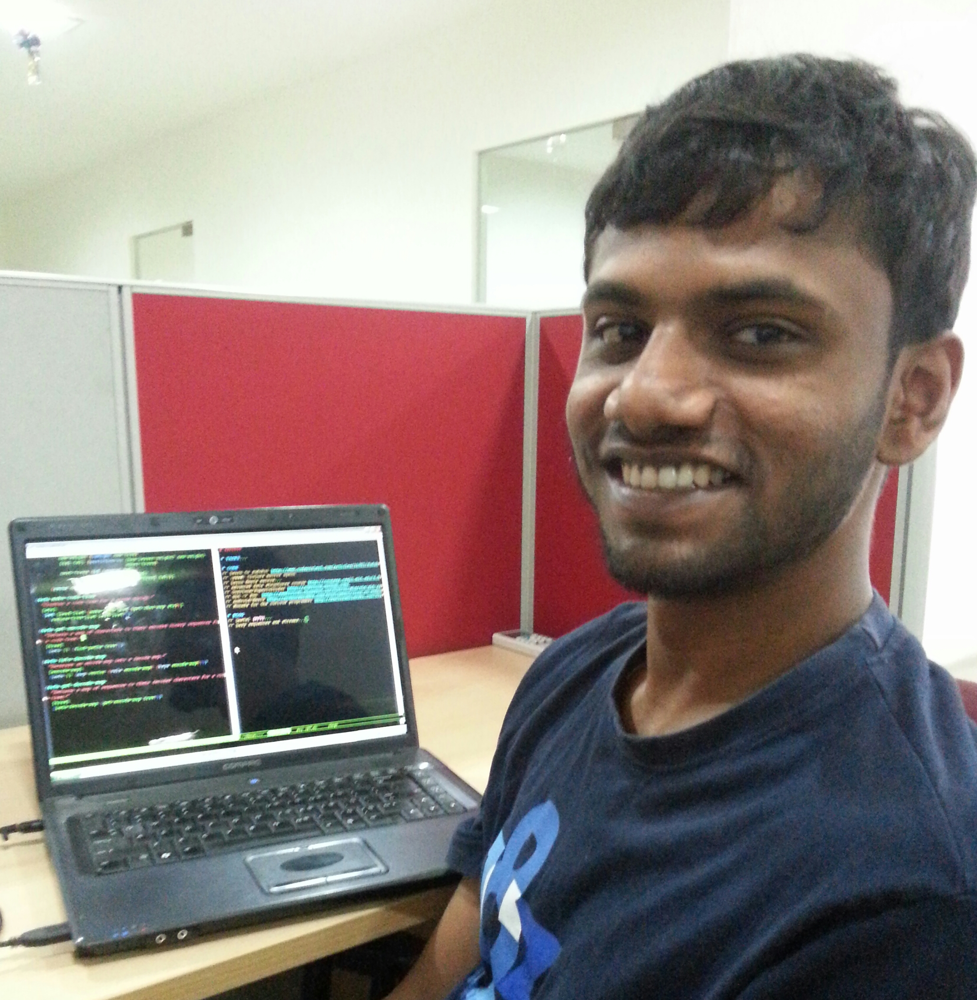

|  |
programming [mass noun] /'prəʊɡramɪŋ/
hack [intransitive verb] /'hak/
I'm a software developer working mostly on C#, and most of my leisure time is spent programming Clojure, C and Ruby in experimental and open source projects. Almost anything related to engineering, computer science, programming langauges, mobile technology and S-expressions gets me really excited. |